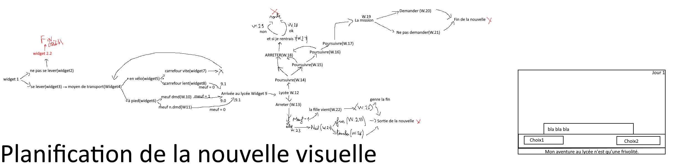

GrandBail
Retour à la page d'accueil
Date de sortie : 19 décembre 2022
Nouvelle visuelle type-1
Synopsis : Bienvenue au lycée !
Nouvelle visuelle simple inspirée des jeux nippons.

Une fin inatendue ! Voici une des premières esquisses du jeu.

Point de vu technique.
- Le jeu tourne sur n'importe quel ordinateur assez récent. Une configuration spécifique pour les jeux n'est pas nécessaire.
- Le jeu fait 223 mo.
Installer le .rar du jeu
Retour à la page d'accueil